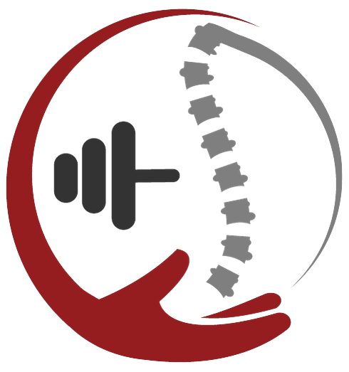

Sito in costruzione
Sto rifacendo il sito da capo per raccontare meglio come lavoro. Nel frattempo ci sono: se vuoi parlarmi del tuo obiettivo, scrivimi o prendi mezz'ora di videochiamata, senza impegno.